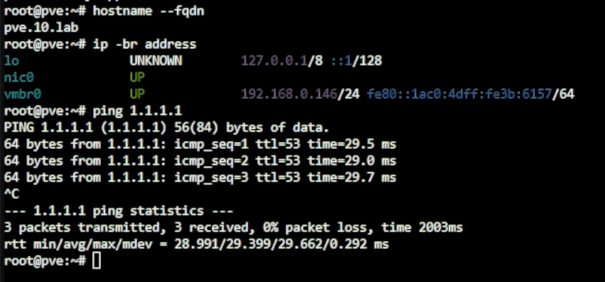
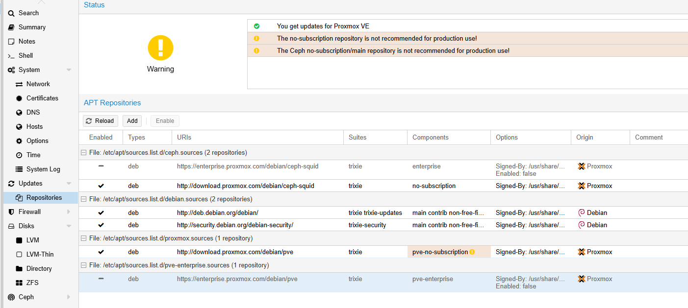
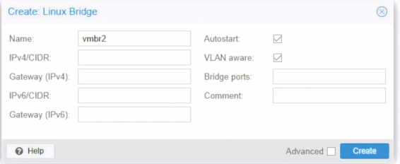
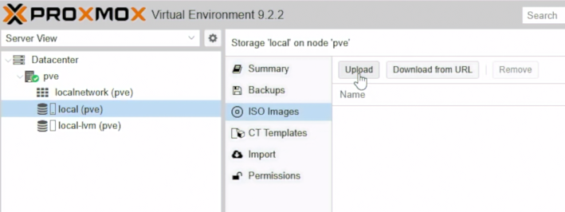
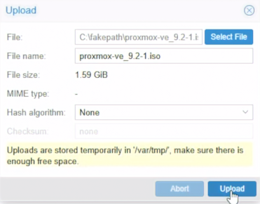
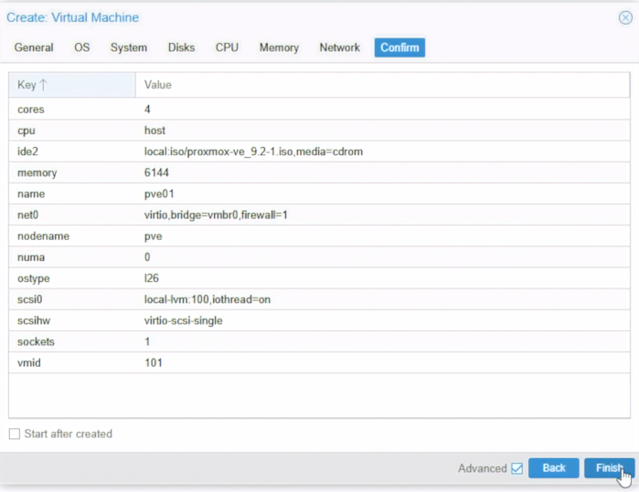
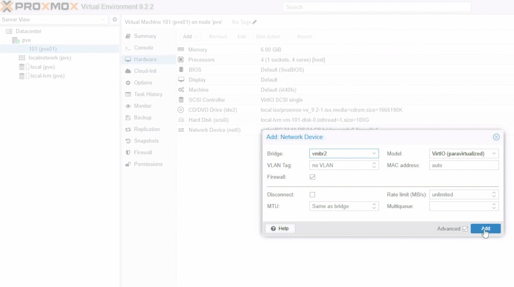
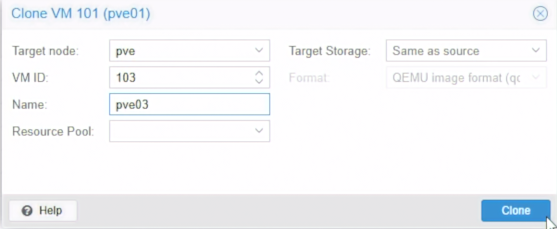
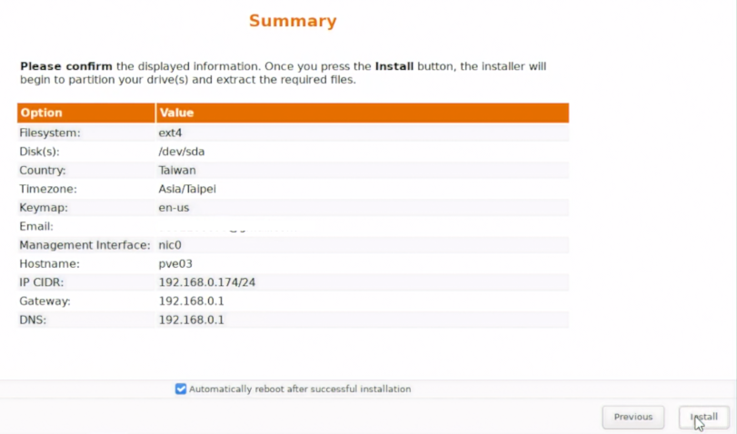
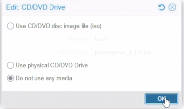

Day 03｜從單機到三節點實驗環境：Proxmox VE 安裝與巢狀虛擬化
對應正文：Day 03｜從單機到三節點實驗環境：Proxmox VE 安裝與巢狀虛擬化
本日一次完成實體主機的 pve-l0、三台 L1 PVE VM，以及 pve01～pve03 的安裝。這一天先讓所有 PVE 從現有路由器取得可用網路，OPNsense 與內部 VLAN 留到後續天數處理。
完成後的狀態
- 層級：L0 實體主機
- VMID：-
- 名稱：pve-l0
- 用途：承載整個單機 Lab
- 層級：L1 VM
- VMID：101
- 名稱：pve01
- 用途：PVE Cluster 節點 1
- 層級：L1 VM
- VMID：102
- 名稱：pve02
- 用途：PVE Cluster 節點 2
- 層級：L1 VM
- VMID：103
- 名稱：pve03
- 用途：PVE Cluster 節點 3
pve-l0、pve01、pve02、pve03 的管理網路都先接現有路由器 LAN。安裝器顯示的 IP、Prefix、Gateway 與 DNS 以 DHCP 實際帶入的內容為準，安裝完成後再到路由器依 MAC Address 建立固定租約。
這是 OPNsense 尚未建立時的 Bootstrap 設定，不是 30 天結束時的長期安全狀態。Day 15 會在不修改 Corosync 與 Ceph 的前提下，將 pve01～pve03 的 Default Gateway 與 DNS 切到 OPNsense Management VLAN 10；本節已錄製的安裝流程不需要重做。
1. 下載安裝媒體
- 開啟 Proxmox VE ISO 頁面：https://www.proxmox.com/en/downloads/proxmox-virtual-environment/iso。
- 下載目前系列使用的
proxmox-ve_9.2-1.iso。 - 開啟 Rufus：https://rufus.ie/downloads/。
- 插入至少 8 GB USB，選擇 ISO 後按
START。 - Rufus 詢問寫入模式時先使用建議值；完成後安全退出 USB。
錄影前可在 Windows PowerShell 驗證檔案：
Get-FileHash .\proxmox-ve_9.2-1.iso -Algorithm SHA256
官方 9.2-1 ISO SHA256：
4e88fe416df9b527624a175f24c9aa07c714d3332afb1ee3dbf3879573ef2c6c
2. 安裝 L0 實體 PVE
BIOS／UEFI
- 開機時按主機板顯示的
Delete、F2或 Boot Menu 鍵。 - 啟用 Intel VT-x／VT-d，或 AMD-V／IOMMU。
- 選擇剛製作的 USB 開機。
Proxmox 安裝器
- 選
Install Proxmox VE (Graphical)。 - 閱讀 EULA，按
I agree。 Target Harddisk選 500 GB 示範碟；Lab 採預設 LVM-thin，不在這顆單碟上假裝 ZFS Mirror。Country選 Taiwan、Time zone選Asia/Taipei，鍵盤依實際鍵盤選擇。- 設定 root 密碼與可收信的 Email。
Management Interface選接到現有路由器 LAN、且畫面已取得 DHCP 資訊的網卡。Hostname輸入pve-l0.lab.home。IP Address (CIDR)、Gateway、DNS Server保留安裝器依目前網路自動帶入的值。- 在 Summary 畫面逐項確認，按
Install。 - 安裝完成後拔除 USB，按
Reboot。
PVE 管理位址需要長期固定，但現在還不知道路由器會租出哪個 IP。正確順序是先接受實際租約，再用該網卡 MAC 建立 DHCP Reservation，而不是先猜一個位址。
第一次登入與固定租約
- Console 開機完成後，拍下畫面顯示的完整 Web URL。
- 同一個 LAN 的電腦開啟該 URL，接受自簽憑證警告。
User name輸入root，Realm 選Linux PAM standard authentication。- 到路由器的 DHCP Client／Connected Devices 頁面找到
pve-l0。 - 核對 MAC Address 與 Console 顯示的 IP，建立固定租約並保持目前 IP 不變。
- 將實際結果記在本文末端的部署紀錄。
PVE Shell 可用以下指令確認實際網路，不需要手動代入範例 IP：
hostname --fqdn
ip -4 -br address show vmbr0
ip route
cat /etc/resolv.conf

圖（一）確認 pve-l0 的主機名稱、管理位址與外部連線。
確認巢狀虛擬化
在 pve-l0 Shell 執行：
cat /sys/module/kvm_intel/parameters/nested 2>/dev/null
cat /sys/module/kvm_amd/parameters/nested 2>/dev/null
依 CPU 類型只會有其中一個檔案。輸出 Y 或 1 代表已啟用；若輸出 N 或 0，只執行符合自己 CPU 的其中一組設定：
# Intel
echo "options kvm-intel nested=Y" > /etc/modprobe.d/kvm-intel.conf
# AMD
echo "options kvm-amd nested=1" > /etc/modprobe.d/kvm-amd.conf
reboot
重新開機後再次檢查輸出。後續建立 pve01～pve03 時，還要將 VM 的 CPU Type 設為 host，才能把硬體虛擬化能力傳入 L1。
3. 更新套件來源
沒有 Enterprise Subscription 的 Lab 使用兩個不同用途的來源：
PVE 套件庫：http://download.proxmox.com/debian/pve
Ceph Squid 套件庫：http://download.proxmox.com/debian/ceph-squid
你提供的網址只是 Repository URI，不能單獨貼成一行 APT 設定。PVE 9／Debian 13 使用 trixie，PVE Repository 的 Component 是 pve-no-subscription，Ceph Repository 的 Component 才是 no-subscription。
3.1 停用需要訂閱的來源
- 選
pve-l0→Updates→Repositories。 - 選取 URI 含
enterprise.proxmox.com/debian/pve的項目，按Disable。 - 若畫面已有 URI 含
enterprise.proxmox.com/debian/ceph-squid的項目，也按Disable。 - 不要停用 Debian 13 的
trixie、trixie-updates與trixie-security基礎來源。
3.2 加入 PVE No-Subscription Repository
在 Shell 開啟檔案：
nano /etc/apt/sources.list.d/proxmox.sources
填入：
Types: deb
URIs: http://download.proxmox.com/debian/pve
Suites: trixie
Components: pve-no-subscription
Signed-By: /usr/share/keyrings/proxmox-archive-keyring.gpg
按 Ctrl+O、Enter 儲存，再按 Ctrl+X 離開。
3.3 加入 Ceph Squid No-Subscription Repository
nano /etc/apt/sources.list.d/ceph.sources
填入：
Types: deb
URIs: http://download.proxmox.com/debian/ceph-squid
Suites: trixie
Components: no-subscription
Signed-By: /usr/share/keyrings/proxmox-archive-keyring.gpg
同樣按 Ctrl+O、Enter、Ctrl+X。

圖（二）停用 Enterprise Repository，改用 No-Subscription Repository。
3.4 更新並核對來源
apt update
apt policy pve-manager ceph-common
grep -R --line-number --no-messages 'download.proxmox.com\|enterprise.proxmox.com' /etc/apt/sources.list /etc/apt/sources.list.d/
apt update 不應再出現 Enterprise Repository 的 401 Unauthorized，也不能同時混入其他 Debian 版本或不同 Ceph 大版本的來源。確認後再到 Updates 按 Refresh、Upgrade。
pve-l0 加入兩個來源是為了保留完整錄製環境；真正安裝 Ceph Daemon 的節點是後續 Cluster 內的 pve01～pve03。這是示範環境設定，正式環境應依支援與更新策略使用 Enterprise Repository。
4. 建立內部 Trunk Bridge
- 選
pve-l0→System→Network。 - 按
Create→Linux Bridge。 Name填vmbr2。Bridge ports留白，IPv4、IPv6 都選不配置。- 勾選
VLAN aware，Comment 填L1 PVE internal VLAN trunk。 - 按
Create，再按Apply Configuration。

圖（三）建立供 Lab 內部 VLAN 使用的 vmbr2。
vmbr0 繼續連現有路由器；vmbr2 是 Lab 內部 VLAN 10～50 的 Trunk，不直接設定 Host IP 與 Default Gateway。Day 11 若需要從 L0 管理 OPNsense，會另外建立 vmbr2.10 VLAN 子介面，不會新增 vmbr3。
5. 上傳 PVE ISO

圖（四）進入 local Storage 的 ISO Images。
- 選
pve-l0→local (pve-l0)→ISO Images。 - 按
Upload，選剛下載的 PVE ISO。 - 等待 Task 顯示
OK。

圖（五）上傳 Proxmox VE ISO。
6. 建立 pve01
- 右上角按
Create VM。 General：Node 選pve-l0、VM ID 填101、Name 填pve01。OS：選上傳的 PVE ISO；Guest OS Type 選Linux。System：Machine、BIOS 先用預設；勾選Qemu Agent可先保留，PVE 安裝完成後不靠它管理。Disks：Bus 選 SCSI、Storage 選local-lvm、Disk size 填80 GiB、Discard 勾選。CPU：Sockets1、Cores4、Type 選host。Memory：填12288 MiB，不要啟用 Ballooning。Network：Bridge 選vmbr0、Model 選VirtIO、VLAN Tag 留白。- 在 Confirm 取消
Start after created，按Finish。

圖（六）建立 pve01 的硬體摘要。圖中的 6144 MiB Memory 與 100 GiB Disk 是較早的錯誤值，應以本文的 12288 MiB 與 80 GiB 為準。
- 選 VM 101 →
Hardware→Add→Network Device。 - 第二張網卡 Bridge 選
vmbr2、Model 選VirtIO、VLAN Tag 留白。 - 到
Options確認Start at boot目前關閉，避免同時吃滿 Lab 記憶體。

圖（七）替 pve01 加入連到 vmbr2 的第二張 VirtIO 網卡。
7. 複製 VM 硬體設定
為了錄影清楚，可以逐台建立；若使用 Clone，也要改正 VMID、名稱與 MAC Address。
- VMID：101
- Name：pve01
- CPU：4
- RAM：12 GB
- Disk：80 GB
- net0：vmbr0
- net1：vmbr2
- VMID：102
- Name：pve02
- CPU：4
- RAM：12 GB
- Disk：80 GB
- net0：vmbr0
- net1：vmbr2
- VMID：103
- Name：pve03
- CPU：4
- RAM：12 GB
- Disk：80 GB
- net0：vmbr0
- net1：vmbr2
建立 pve02 與 pve03 後，逐台確認兩張 VirtIO NIC 的 MAC Address 都不同。

圖（八）由 pve01 複製 pve03 的 VM 硬體設定。
8. 安裝 pve01～pve03
三台依序安裝，不要同時執行安裝器。
- 選 VM →
Start→Console。 - 選
Install Proxmox VE (Graphical)。 - Target Disk 選該 VM 的 80 GB 虛擬磁碟。
- 設定時區、root 密碼與 Email。
- Management Interface 選第一張網卡，也就是連到
vmbr0的 NIC。 - Hostname 依序輸入
pve01.lab.home、pve02.lab.home、pve03.lab.home。 - IP、Gateway、DNS 保留安裝器從現有路由器取得並自動帶入的值。

圖（九）確認 pve03 的安裝摘要與管理位址。
- 安裝完成後 Reboot；若仍從 ISO 啟動，到
Hardware→CD/DVD Drive選Do not use any media。

圖（十）安裝完成後停用虛擬光碟媒體。
- 從 Console 拍下每台顯示的 Web URL。
- 到路由器依 VM 的 net0 MAC 建立固定租約，保留它當下取得的 IP。
完成一台並固定租約後再安裝下一台。這樣 Day 07 建 Cluster 時，三個節點的管理 IP 已經穩定。
9. 三台節點的基本整理
每台都執行：
- 登入該節點的 Web UI。
- 到
Updates→Repositories，停用 PVE 與 Ceph Enterprise Repository。 - 依本篇 3.2、3.3 分別建立
proxmox.sources與ceph.sources。 - 執行
apt update，確認來源是trixie，再完成套件更新。 - Shell 執行
hostname --fqdn、ip -4 -br address、ip route。 - 確認 net0 可到現有路由器，net1 尚未設定 IP。
10. 部署紀錄
安裝完成後填入實際值，不要把錄影電腦的 IP 當成 PVE IP：
- 主機：pve-l0
- FQDN：pve-l0.lab.home
- 路由器固定租約：安裝完成後記錄
- net0 MAC：安裝完成後記錄
- Web UI 已登入：[ ]
- 主機：pve01
- FQDN：pve01.lab.home
- 路由器固定租約：安裝完成後記錄
- net0 MAC：安裝完成後記錄
- Web UI 已登入：[ ]
- 主機：pve02
- FQDN：pve02.lab.home
- 路由器固定租約：安裝完成後記錄
- net0 MAC：安裝完成後記錄
- Web UI 已登入：[ ]
- 主機：pve03
- FQDN：pve03.lab.home
- 路由器固定租約：安裝完成後記錄
- net0 MAC：安裝完成後記錄
- Web UI 已登入：[ ]
錄影收尾畫面
- L0 Datacenter 中看得到 VM 101、102、103。
- 四台 PVE 都能透過路由器配發並保留的管理 IP 開啟 Web UI。
- 三台 L1 PVE 的 VMID、Hostname 與 FQDN 正確。
- 在 L0 檢查每台 L1 PVE VM：
net0接到 L0vmbr0，net1接到 L0vmbr2；這裡的vmbr2是pve-l0上的 Trunk Bridge，不是 L1 PVE 內部的 Cephvmbr2。 - 已說明單一實體主機只能模擬三節點，不能當成正式硬體 HA 證明。